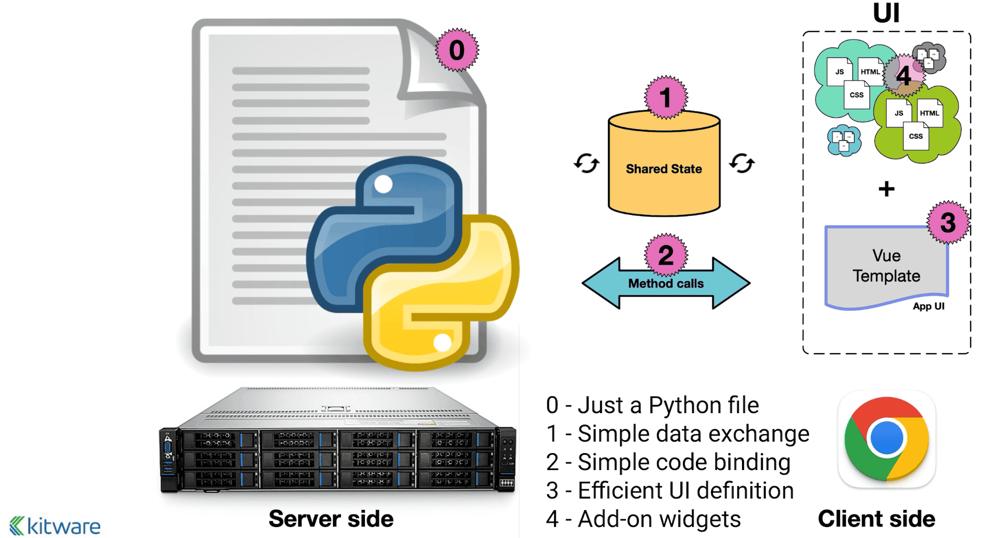
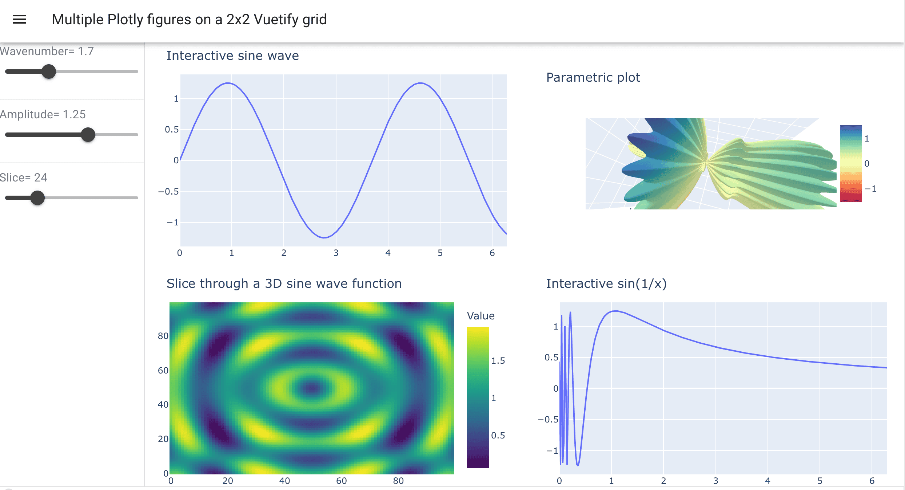
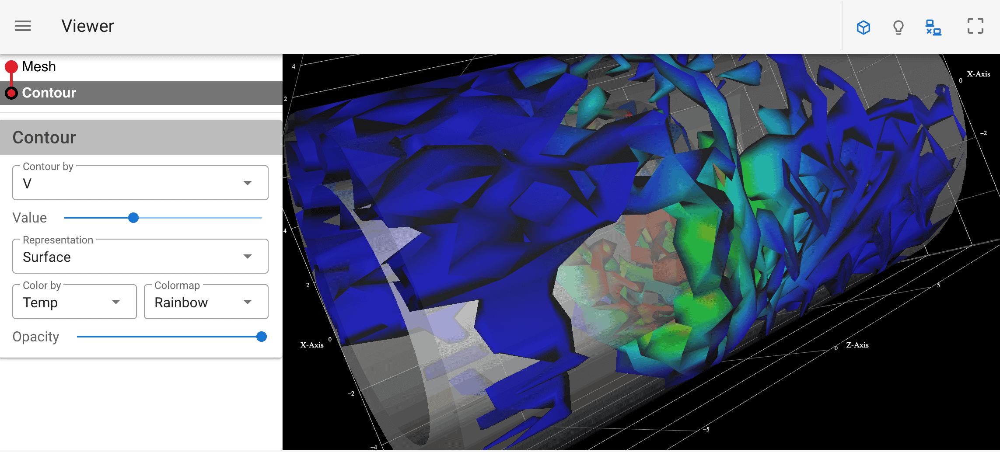

Modern tools for web visualization
March 27th, 10am-11:30am
Earlier in this Winter Series we covered building interactive web apps with Plotly Dash. Some of its features:
- you can mix and match multiple Plotly figures in a single web app
- multiple interactive controls: dropdowns and radio buttons (select one), checklists (select multiple), text/number input fields, sliders, etc.
- mouse selection in one plot can show in other plots,
- can create different tabs inside the app, with rules for switching between them,
- even can create an entire website with user guides, plots, code examples, etc.
On May-19, we’ll also offer a webinar demoing building the same set of Python dashboards using Python Shiny and Plotly Dash, each offering different approaches to creating reactive interfaces and interactive visualizations.
In today’s workshop, we’ll focus on 3D web visualization using tools from the VTK ecosystem. That is, we’ll take workflows you’re familiar within ParaView and bring them online as interactive visualizations.
While today’s session is not recorded, a recording of our November 2025 webinar “Creating interactive online visualizations with Trame” is available on this page.
Evolution of VTK
- VTK (Visualization Toolkit)
- C++ library, initial release in 1993
- handles I/O, data processing, rendering
- interpreted interface layer in Python (started in late 1990s, full API coverage by ~2018)
- runs server-side only (C++ or Python)
- Vtk.js is a rewrite of (most of) VTK in JavaScript
- runs client-side only (in the browser), started in 2016
- rendering limited by the browser
- somewhat limited processing and I/O
- Previous (pre-2021) state-of-the-art web visualization
- standalone vtk.js applications, e.g. ParaView Glance or ParaView Divvy
- vtk.js applications interacting with a remote ParaView server using ParaViewWeb framework, e.g.
- ParaView Visualizer (recreating full ParaView functionality on the web)
- ParaView Lite (lighter workflows than ParaView Visualizer)
- In all these cases you create web apps in JavaScript, or use existing apps
Quick glance at … Glance
Of all pre-2021 applications, ParaView Glance is the one I still recommend – here is a live demo.
You can import any ParaView scene (a collection of pre-computed polygons) into ParaView Glance for live online visualization and to easily share your 3D content with peers and the broader public.
Glance is a standalone web application (written in JavaScript and vtk.js) that runs without a server, enabling visualization of small to medium-sized data. Server support is planned for future releases.
- Create a visualization with several layers, make all layers visible in the pipeline
- File | Export Scene… as VTKJS to your computer
- Open https://kitware.github.io/paraview-glance/app
- Drag the newly saved file to the dropzone on the website
- Interact with individual layers in 3D: rotate and zoom, change visibility, representation, variable, colourmap, opacity
To automatically load a visualisation into Glance, use the query syntax GLANCEAPPURL?name=FILENAME&url=FILEURL to pass name and url of your publicly accessible dataset to the web server – study the live demo link above as an example. To include into websites, you can use JavaScript to parse long URL strings (see an example in our regular ParaView slides).
Trame intro
- Open-source server-connected web dashboard platform with a Python interface into which you can plug different components:
- some mix of VTK and vtk.js scripts
- ParaView scripts
- Matplotlib scripts
- Plotly scripts
- Vega-Altair scripts
- etc.
- Created by Kitware: v1 in September 2021, now on v3.10
- Pronounced [trʌm]
- Built on top of VTK and ParaView
- All Python scripts run on the server backend
- Interactive graphical widgets rendered either on the server (and displayed in your browser) or directly in your browser
Architecture

- Single backend Python code on the server (cloud, HPC, Jupyter, desktop app)
- UI (layout/buttons/…) via Vuetify (Material Design component framework) toolkit on top of Vue.js, nicely abstracted
- Plots supplied by widgets
- State variables automatically synced between the backend and the frontend (UI)
- Controller actions can be called from (1) Python, (2) frontend, or (3) state changes
Links
- Front page – click on any example (top menu) to get its source code
- Source code – check
examples/ - Official tutorial
- excellent self-guided tour, probably the best starting point
- today I will show many examples from their tutorial
- Official documentation
- use the left-side menu: trame API, client API, …
- Discussion forum
Installation
On your own computer, you can use your favourite package manager, e.g. uv:
uv venv ~/env-trame --python 3.12 # create a new virtual env
source ~/env-trame/bin/activate
uv pip install trame # trame core
uv pip install trame-vuetify # UI widgets
uv pip install trame-components # other components to work with VTK/ParaView scenes
uv pip install trame-vtk # VTK widgets for trame
uv pip install vtk # if running plain VTK code
uv pip install trame-matplotlib # matplotlib widgets for trame
uv pip install trame-plotly # plotly widgets for trame
...
deactivateIf you want to run trame inside Jupyter notebooks, also add:
uv pip install setuptools jupyterlabOn the training cluster, I already installed it via:
mkdir -p /project/def-sponsor00/shared
cd /project/def-sponsor00/shared
module load python/3.12.4 vtk/9.4.2
python -m venv env-trame
source env-trame/bin/activate
pip install --no-index --upgrade pip
pip install --no-index msgpack requests
python -m pip install trame trame-vuetify trame-vtk
...
deactivate
chmod og+X,og-r /project/def-sponsor00/shared
chmod -R og+rX /project/def-sponsor00/shared/env-trameso that you can load it with:
source /project/def-sponsor00/shared/env-trame/bin/activateGet the tutorial codes
--- laptop ---
git clone https://github.com/Kitware/trame-tutorial.git
cd trame-tutorial
git branch -m master mainIn this workshop, I’ll be using heavily modified versions of the tutorial examples, with a simplified coding style and a few additions. For your own work, I recommend starting by cloning the official tutorial repository. I’ve also created an upstream repository on the training cluster that contains all of the modified examples:
--- cass ---
mkdir -p /project/def-sponsor00/shared/trame-tutorial
cd /project/def-sponsor00/shared/trame-tutorial
git config --global init.defaultBranch main
git init
git config receive.denyCurrentBranch updateInsteadpushed my local repository to it:
--- laptop ---
git remote add cass cass:/project/def-sponsor00/shared/trame-tutorial
git add ...
git commit -m ...
git push cass mainand made it readable to all users:
--- cass --
chmod -R og+rX /project/def-sponsor00/shared/trame-tutorialso you can copy my exact examples from there – shown in the “Running on a remote server” section below.
Layouts
Study the code 00_setup/app.py – it creates a single-page layout without a drawer.
source ~/env-trame/bin/activate
cd trame-tutorial
python 00_setup/app.py # use default port 8080
python 00_setup/app.py --port 1234 # use specific port
python 00_setup/app.py --server # prevent your browser from opening automaticallyNow change SinglePageLayout to SinglePageWithDrawerLayout.
Running on a remote server
--- cass --
source /project/def-sponsor00/shared/env-trame/bin/activate
git clone /project/def-sponsor00/shared/trame-tutorial
cd trame-tutorial
python 00_setup/app.py --host 127.0.0.1 --port 808X --server
--- laptop ---
ssh cass -L 8080:localhost:808X
open http://localhost:8080Binding the server to 127.0.0.1 on a publicly accessible host is very important for security: the host ignores any incoming traffic on that port from the outside world, but you can still connect via an ssh tunnel. It also makes sense to close port 808X in the firewall.
On a compute node behind the cluster’s firewall, you will have to set up the tunnel as ssh cass -L 8080:<nodename>:808X.
Matplotlib
Add a simple Matplotlib widget
As you know, the original Matplotlib produces static plots. We can make them interactive with trame. Let’s start with a basic plot – study and run the code 06_matplotlib/line1-static.py
- Can hide
v3.VContainerline - Check v3.VContainer documentation
Add a state variable
state = server.stateis where you store data that can change dynamically and is automatically synced between the backend (Python on the server) and the frontend (browser UI)- You can watch for changes in state on the backend using the
@state.changedecorator that will run a callback function- callback functions are defined with
@state.change
- callback functions are defined with
- Study and run the code
06_matplotlib/line2-slider.py
v3.VSlider(v_model=("wavenumber", defaultWave), min=0.1, max=5, step=0.1,
hide_details=True, density="compact", style="max-width: 300px;")
v3.VBtn("Reset", click=lambda: setattr(state, "wavenumber", defaultWave))@state.change("wavenumber")
def update_plot(wavenumber, **kwargs): # callback function
line.set_ydata(np.sin(wavenumber*x))
fig.canvas.draw_idle() # redraw locally in matplotlib
plot.update() # notify Trame to refresh image in browserInteractive slice through a 3D function
Here we visualize an interactive slice through a 3D sine envelope function defined inside a unit cube \(x_i\in[0,1]\):
\[ f(x_1,x_2,x_3) = \sum_{i=1}^2\left[\frac{\sin^2\left(\sqrt{\xi_i^2+\xi_{i+1}^2}\right)-0.5} {\left[0.001(\xi_i^2+\xi_{i+1}^2)+1\right]^2}+0.5\right]\text{, where }\xi_i\equiv30(x_i-0.5), \]
discretized on a \(100^3\) Cartesian grid and stored in sineEnvelope.nc
- Code in
06_matplotlib/slice2-streamlined.py - Define
slicestate variable - Redraw the image with:
@state.change("slice") # watch for slice changes
def update_plot(slice, **kwargs):
ax.imshow(data[:, :, slice], origin="lower")
fig.canvas.draw_idle() # redraw locally in matplotlib
plot.update() # notify Trame to refresh image in browserPlotly
Example of a more complex 2x2 layout with Plotly widgets
We can create Plotly dashboards with Dash, but here is an example of building a similar dashboard in trame – see the code in 07_plotly/4-dashboard2x2.py.
- 4 separate Plotly figures, including an interactive 3D plot
- 2 callback functions
- 2 familiar sliders (both controlling fig1 and fig2)
- one additional slider for a 3D slice position in fig3

Remove two of the plots (fig2 and fig4) without breaking the dashboard. Remove all unnecessary code related to the deleted figures. Rearrange the two remaining figures into columns to fill the layout horizontally. From the original 75 lines of code, how many do you have left?
VTK
VTK can be integrated into trame with various levels of granularity:
- entirely local (client-side) via vtk.js
- hybrid: remote VTK for processing (creating meshes) and local vtk.js for rendering, via a
vtk.VtkLocalViewcall - remote VTK for processing and rendering on the server, pixels sent to the client, via a
vtk.VtkRemoteViewcall
Let’s demo these!
Client-side rendering with vtk.js only
You can find the code for this in 01_no_vtk/client.py. There is no traditional Python VTK code in this example. It imports a lightweight adaptor to present VTK objects to the UI:
from trame.widgets import vtkvtk.VtkAlgorithmhandles the state variableresolutionas an argument (no explicit callback function)- Run the code – all rendering is done on the client
- Add a second VTK object:
with vtk.VtkGeometryRepresentation():
vtk.VtkAlgorithm(vtk_class="vtkSphereSource")VTK rendering
The Python interface to VTK provides the full functionality of the C++ API, handling I/O, data processing, and rendering. Whether in C++ or Python, the usual steps to render an object in VTK should be familiar to anyone with some VTK experience:
- Create a renderer, then a render window, and link them together by adding the renderer to the render window (a render window can hold multiple renderers)
- Create an interactor (which provides a platform-independent interaction mechanism for mouse/key events), connect it to the render window, and ensure it tracks the camera
- Create a source, e.g. a cone
- Create a mapper (a graphical representation) and set the cone source as its input
- Create an actor and assign the mapper to it
- Add the actor to the renderer (a renderer can hold multiple actors), then reset the camera to frame the scene
The code in 01_vtk/coneCylinder.py does basically that for two objects, each with its own mapper and actor.
- try local rendering: server sends the geometry to the client, vtk.js on the client
- try remote rendering: server renders and sends images to the client
Render a VTK dataset from a file
- Code in
01_vtk/sine1-static.py- loads
sineEnvelope.vtifile on the server - applies an Outline Filter, creates an outline mapper, then an outline actor
- applies a Contour Filter at \(\rho=0.15\), creates a contour mapper, then a contour actor
- adds both actors to the renderer
- loads
- Local rendering is noticeably faster even for this small dataset
- local rendering: working with geometry on the client
- remote rendering: receiving pixelated images
Add a contour slider with the default value of density \(\rho=0.15\), along with a callback function
@state.change("contourValue")
def update_contour(contourValue, **kwargs):
contour.SetValue(0, float(contourValue))
view.update()Try doing this without checking the solution in 01_vtk/sine2-slider.py.
Replace the Contour filter with the Threshold filter to only show data in the range \(0.3\le\rho\le 0.6\).
Controller actions
Controller actions – defined with @ctrl.add decorator – are functions that can be called from Python or from the frontend UI (e.g. a button click) or from state changes. You can find an example in 03_html/click.py.
from trame.app import get_server
from trame.ui.vuetify3 import SinglePageLayout
from trame.widgets import vuetify3 as v3
server = get_server(client_type = "vue3")
ctrl = server.controller
@ctrl.add("printout")
def reset_plot(): # this function gets triggered when you click Print
print("Another line!")
# ctrl.printout() # syntax to call it in the main Python code
with SinglePageLayout(server) as layout: # create a UI
with layout.content:
v3.VBtn("Print", click=ctrl.printout)
server.start()Complex visualization app
Code 04_application/coneMeshContour.py adapted from the tutorial:
- reads an Unstructured Grid file on the server
- creates an entire visualization pipeline in the drawer
- packs pipeline elements into collapsible Vuetify UI cards
- good usage example for
vuetify.VCol()andvuetify.VRow() - the original Python code is 500+ lines (cleaned it to 359 lines)

ParaView
Code 05_paraview/cone.py adapted from the tutorial. To run it, use ParaView’s Python, pointing to the correct venv with --venv instead of source:
cd ~/tmp/trame-tutorial
pvpython 05_paraview/cone.py --venv ~/env-trameparaview.VtkRemoteViewuses ParaView’s Python VTK pipeline underneath to render the image on the server, delivers this image to the browser, works right out of the boxparaview.VtkLocalViewshould deliver the cone’s geometry to the browser for rendering via vtk.js, but apparently it does not, and the view appears empty … not sure why
ParaView Python workflows are much more compact than VTK Python workflows. To learn more about ParaView Python scripting, use the Trace Tool in ParaView’s GUI.
ParaView state loader via the command line
Code 05_paraview/stateLoader.py adapted from the tutorial.
Open local ParaView GUI and:
- load
~/training/paraviewWorkshop/data/sineEnvelope.nc - create a interactive visualization with several layers
- save the state as
05_paraview/demo.pvsm
Run the trame script:
pvpython 05_paraview/stateLoaderFromFlag.py --venv ~/env-trame --data 05_paraview/demo.pvsmTemporarily remove the data file sineEnvelope.nc from its location to verify that demo.pvsm uses live data.
Use a local ParaView to create your own state file and then render it remotely with this script.
ParaView state loader via upload
Code 05_paraview/uploadState.py. Run it this way:
pvpython 05_paraview/uploadState.py --venv ~/env-trameIt’ll prompt you to upload the state (.pvsm) file – use 05_paraview/demo.pvsm.
Inside the script, we save the content of this uploaded state file into a remote file uploaded_state.pvsm on the server, which then reads the data file sineEnvelope.nc on the server side:
bytes = file["content"]
with open("uploaded_state.pvsm", "wb") as f:
f.write(bytes)
simple.LoadState("uploaded_state.pvsm")For a flashier demo, the visualization can run without any pre-existing files on the server by uploading both the state (.pvsm) and data (.nc) files. A good starting point is the documentation https://kitware.github.io/trame/examples/core/files.html
Multi-user setup
For development purposes and in these demos, a simple trame.app serves a single user.
To scale to multiple users in a production environment, you need a setup that isolates user sessions while allowing a single server process to handle all connections. Apparently, there are several ways to do this using third-party web development tools. Since I’m not a web developer, I have not explored this in detail.
Visualizer as a trame.app
A decade ago, the original ParaViewWeb-based Visualizer (a JavaScript frontend communicating with a remote ParaView server) implemented most of ParaView’s functionality in the browser.
Kitware is working on a Visualizer implementation in trame:
- need to request access (work in progress in a private repo … I have not tried it)
- shows the power of trame!
- few other complete trame apps on the same page
Summary
As we’ve seen, Trame lets Python developers create interactive web visualizations with their favourite data-processing engine (numpy, pandas, xarray, pytables, …). It provides integration with popular Python analysis/visualization libraries such as VTK, ParaView, Matplotlib, Plotly, Vega-Altair, etc.
A trame.app is a single Python application that can run in the cloud, on HPC systems, within Jupyter, or bundled locally like a desktop app. It renders in the browser on any device (phone, tablet, laptop). Each client is served by a dedicated stateful server process, and the UI is built with the Vuetify toolkit – an open-source JavaScript/TypeScript library – while being expressed entirely in Python.
Trame offers excellent documentation and supporting resources:
- tutorial https://kitware.github.io/trame/guide/tutorial
- official documentation https://trame.readthedocs.io
- discussion forum https://github.com/Kitware/trame/discussions
- found Sebastien Jourdain’s 2022-Oct Trame Intro (for developers) course very useful